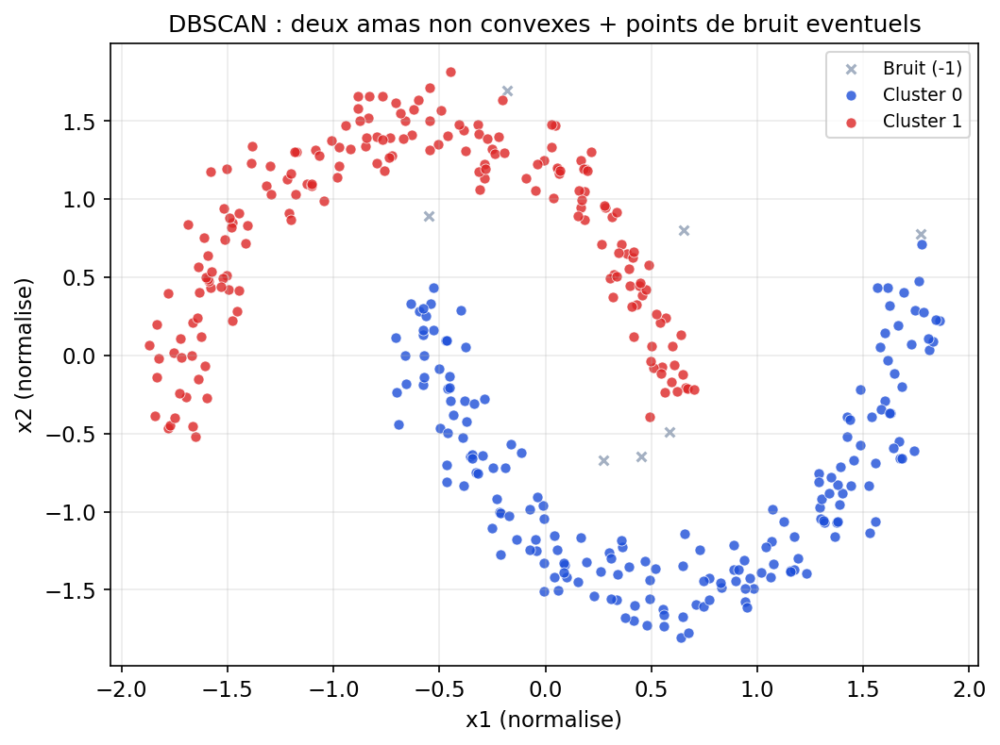
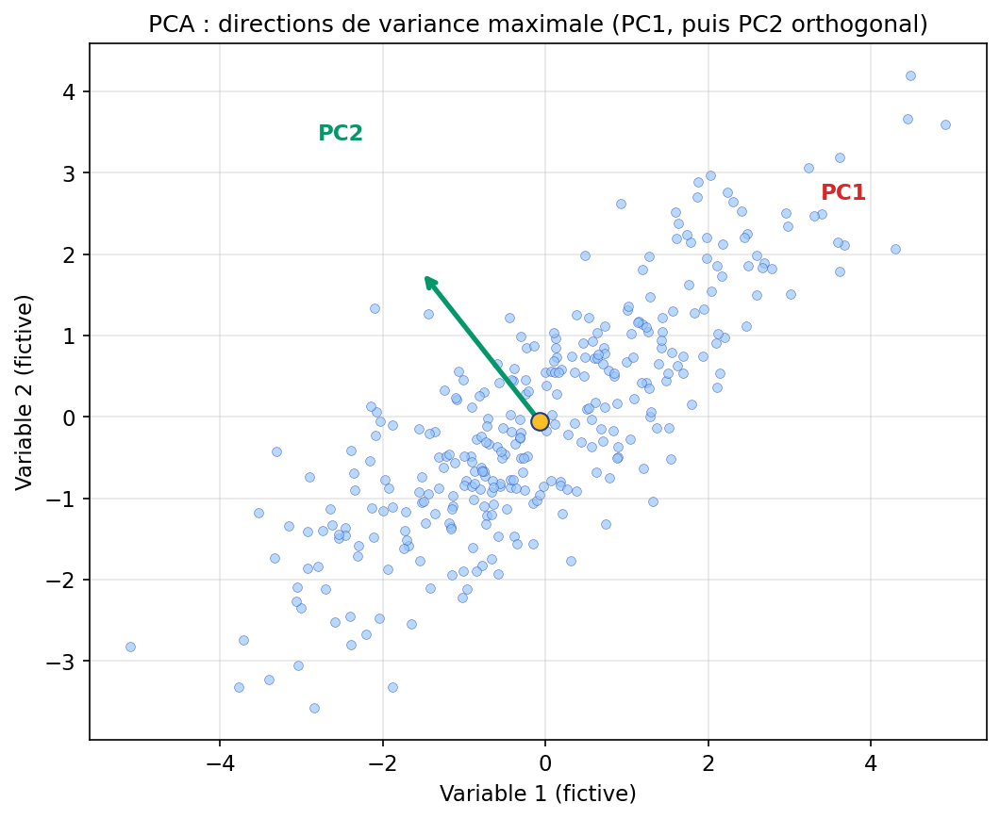

Là où K-means impose à l’avance un nombre de groupes et privilégie des amas « compacts » autour de centres, DBSCAN (Density-Based Spatial Clustering of Applications with Noise) part d’une autre intuition : un cluster, c’est une zone où les points s’accumulent suffisamment — comme une clairière dense dans la jungle. Deux paramètres pilotent l’algorithme :
À partir des points cœur, on « étend » les clusters en chaînant les voisins atteignables ; les points qui ne sont ni cœur ni assez proches d’un cœur peuvent être classés en bruit (étiquette −1 en scikit-learn). Conséquence : on n’a pas besoin de connaître k ; le nombre de clusters émerge — au prix d’un réglage souvent délicat de ε et min_samples.
DBSCAN détecte bien des formes allongées ou non convexes (deux lunes, anneaux imbriqués…) là où K-means coupe parfois à la « truelle » selon ses centroïdes. En revanche, des densités très différentes d’un groupe à l’autre peuvent poser problème ; des variantes (HDBSCAN, OPTICS) existent pour aller plus loin.
Figure : DBSCAN sur données en « deux lunes » (points de bruit éventuels en gris)

Figure : même simulation — K-means avec k = 2 vs DBSCAN

Échelle : comme pour K-means, si les variables ne sont pas comparables, normalisez (souvent StandardScaler) avant de mesurer les distances. Sensibilité à ε : un ε trop petit fragmente tout en bruit ; trop grand fusionne des groupes distincts. Interprétation : les étiquettes de cluster restent des outils d’exploration — le « sens » métier vient encore de votre analyse.
Le partitionnement (K-means, DBSCAN) cherche des groupes de points. L’Analyse en Composantes Principales (PCA) cherche les directions où les données varient le plus — autrement dit un nouveau repère orthogonaux (les composantes principales), ordonné par part de variance expliquée. Mathématiquement, sur données centrées, on diagonalise la matrice de covariance (ou on fait une SVD sur la matrice des données) : la première composante PC1 maximise la variance projetée ; PC2 est orthogonale à PC1 et maximise la variance résiduelle, etc.
Usages typiques : visualiser en 2D ou 3D un nuage de grande dimension ; compresser en ne gardant que les premières composantes ; détecter une colinéarité forte entre variables ; préparer des données avant un autre modèle (attention : la PCA est linéaire — les relations non linéaires peuvent échapper à ce résumé).
Figure : nuage 2D et directions des deux premières composantes principales

Figure : éboulis des variances (jeu Iris, 4 variables)

Le graphique « éboulis » (scree plot) montre souvent que les premières composantes concentrent une grande part de la variance : on peut alors projeter ou reconstruire avec peu de dimensions — en acceptant une erreur de reconstruction contrôlée (variance non expliquée).
Trois outils, trois questions
| Outil | Question posée aux données | Livrable typique |
|---|---|---|
| K-means | Où placer k centres pour minimiser la dispersion interne ? | Partition en k groupes (forme « ronde ») |
| DBSCAN | Où la densité dépasse-t-elle un seuil pendant au moins min_samples voisins ? | Clusters de forme variable + bruit explicite |
| PCA | Quels axes orthogonaux maximisent la variance ? | Nouvelles variables décorrélées, ordonnées par importance |
Comme Mowgli qui apprend où sont les zones sûres sans carte annotée, vous combinez ici des hypothèses géométriques (sphères pour K-means, densité pour DBSCAN, sous-espace linéaire pour la PCA) et des réglages à valider par visualisation, métriques internes et sens métier. Rappel : un neurone de classification n’apparaît pas ici — la PCA et le clustering ne minimisent pas une erreur sur un y ; ils sculptent la structure de X seul.